2.input data format
If you are using shinyCircos2.0 for the first time, I suggest you to check the data format carefully and organize the data strictly according to the format, otherwise shinyCircos2.0 may not work as usual.
We recommend that you upload data in .csv format to shinyCircos2.0,which can avoid many problems.Next I will take a closer look at the data format of the different data.
2.1 chromosome data
Chromosome data is a necessary part of drawing, it determines different sectors, without which shinyCircos2.0 will not be able to draw Circos diagram. There are two types of chromosome data, general data and cytoband data, and their structures are not the same.
2.1.1 general data
general data contains three columns, chr, start, end.as shown in the following figure:
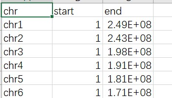

2.1.2 cytoband data
The cytoband data contains five columns, chr, start, end, value1, value2, as shown in the following figure:
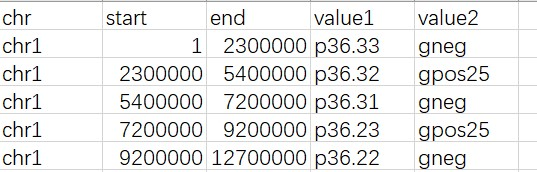
2.2 track data
Track data is used to draw different tracks of the Circos diagram. Different types of tracks have different data, but the first three columns are fixed, namely chr, start, and end. The following will explain different track data.
2.2.1 bar
The data used to draw the barplot should have at least four columns, namely chr, start, end, and value. It is worth noting that the value of value can be positive or negative. In addition, it can also contain a column representing the color category. value, as shown below:
The minimum value of the bar ordinate drawn by unidirectional data is the minimum value of all values, and there is no overlapping intervalThe minimum value of the bar ordinate drawn by unidirectional data is the minimum value of all values, and there is no overlapping interval.
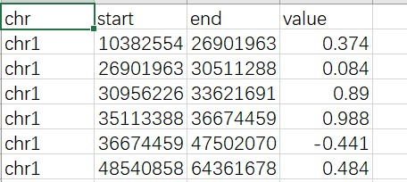
The minimum value of the bar ordinate drawn by unidirectional data is the minimum value of all values, and there is no overlapping intervalThe minimum value of the bar ordinate drawn by unidirectional data is the minimum value of all values, and there is no overlapping interval.
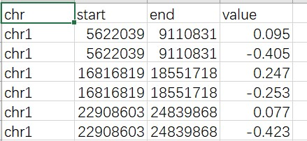
The color column represents the grouping of colors,such as a, b, c
2.2.2 line
The data for drawing a line chart should contain at least four columns, on which other informative line charts can be added.
The standard line data contains four columns, chr, start, end, value1
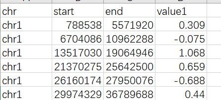
In addition to the standard four columns of data, you can also add a color column, or add another column of value to draw multiple polylines.
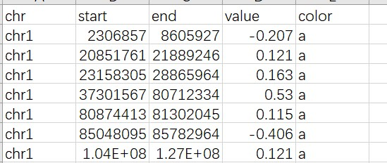
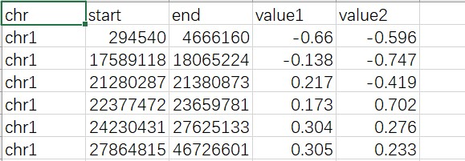
It is worth noting that the stack data is slightly different from the previous one, please see the following figure for details.
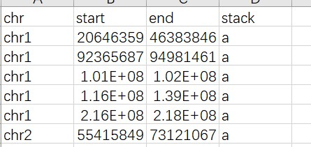
2.2.3 point
The data used to draw the point plot is similar to that of a line plot.
The standard point data contains four columns, chr, start, end, value1
The data can contain a column of data that controls the size of the point
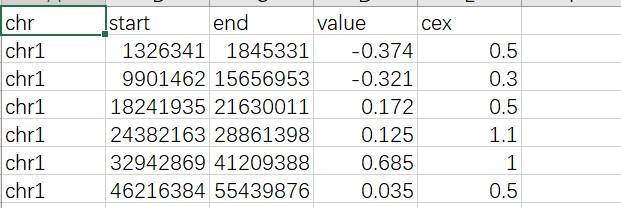
Data can also contain color columns.
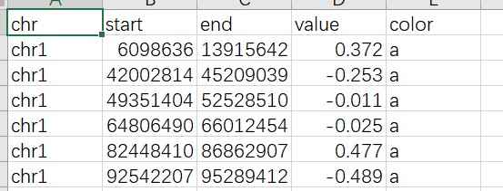
You can also add a column to control the style of the points.
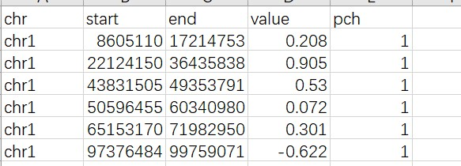
It can also be a variety of combinations, and different columns represent different information.
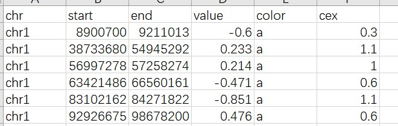
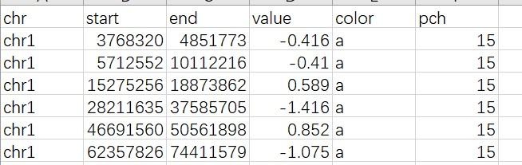
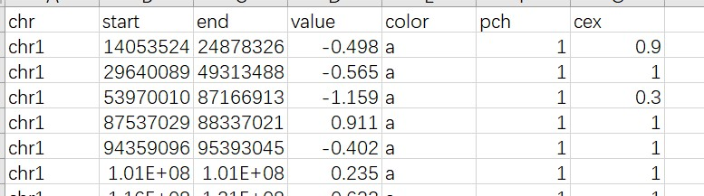
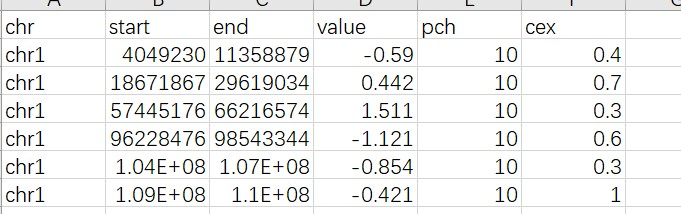
It is worth noting that the stack data is slightly different from the previous one, please see the following figure for details.
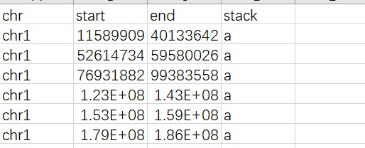
You can add another column of value to draw multiple point in same track.
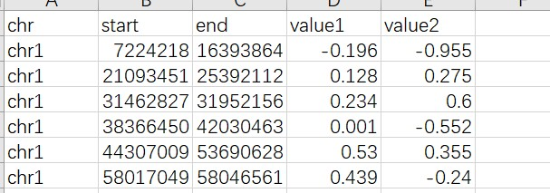
2.2.4 ideogram
The ideogram data is similar to the cytoban data that plots chromosomes.
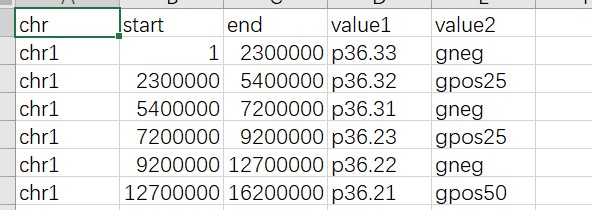
2.2.5 rect-discrete
rect data contains four columns of data, namely chr, start, end, group, and the group column is character.
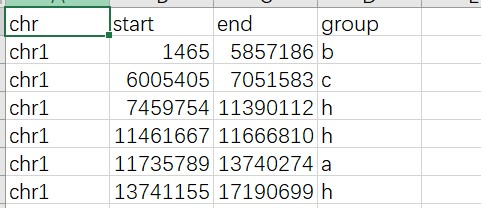
2.2.6 rect-gradual
rect data contains four columns of data, namely chr, start, end, value, and the value column is numeric.
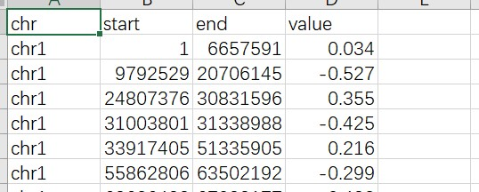
2.2.7 heatmap-discrete
The heatmap-discrete data contains three basic columns, namely chr, start, and end. In addition, it can also contain several columns of group.All group column is character.
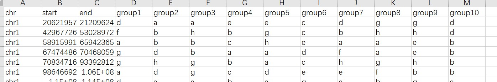
2.2.8 heatmap-gradual
The heatmap-gradual data contains three basic columns, namely chr, start, and end. In addition, it can also contain several columns of value.All value column is numeric.
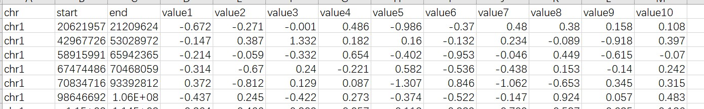
2.3 label data
The label data contains four columns, chr, start, end, label, as shown in the following figure:
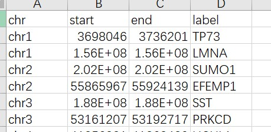
2.4 links data
The link data contains six essential columns, which determine the position of the link respectively. The six columns are chr1, strat1, end1, chr2, start2, end2.
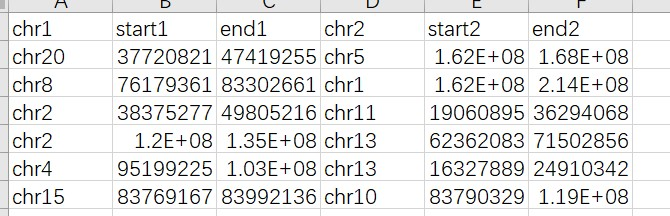
In addition to the most basic six columns, you can also add a column to control the color of links, supporting discrete color values and continuous color values.
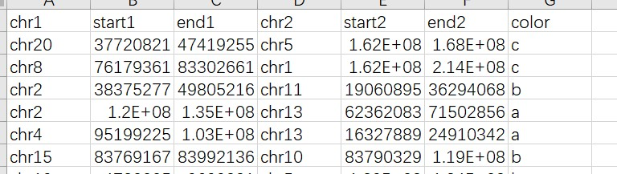
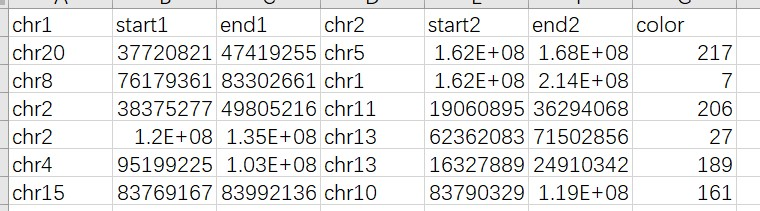